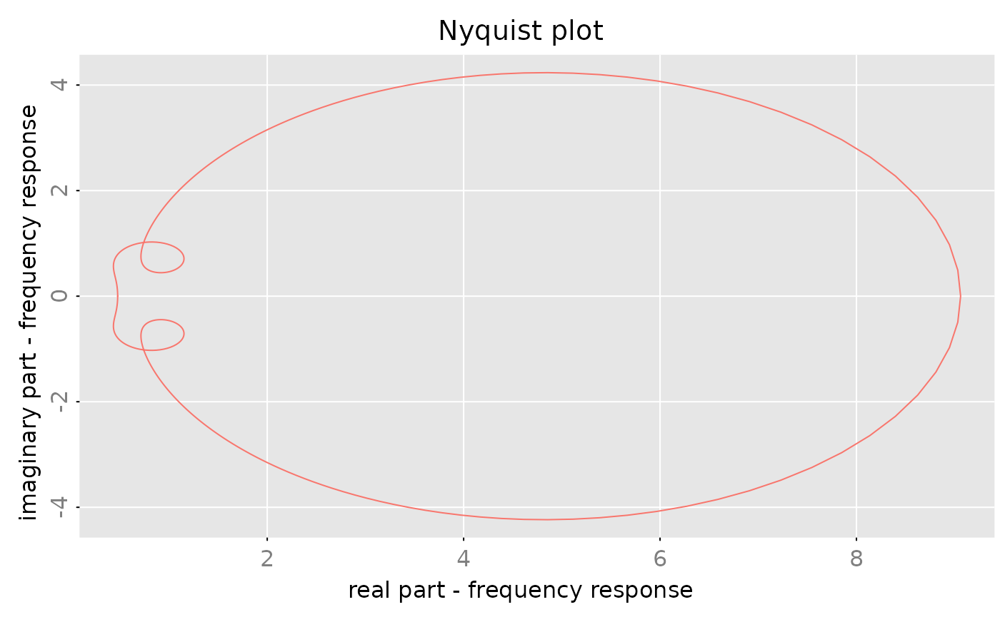
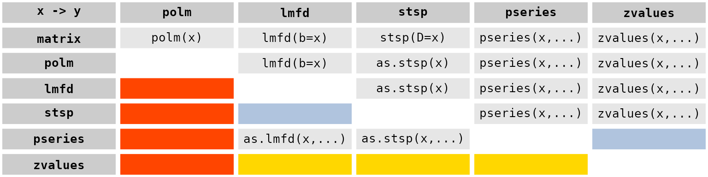
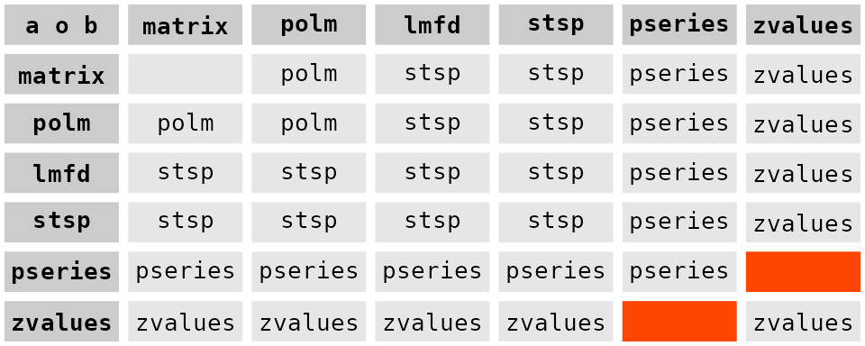
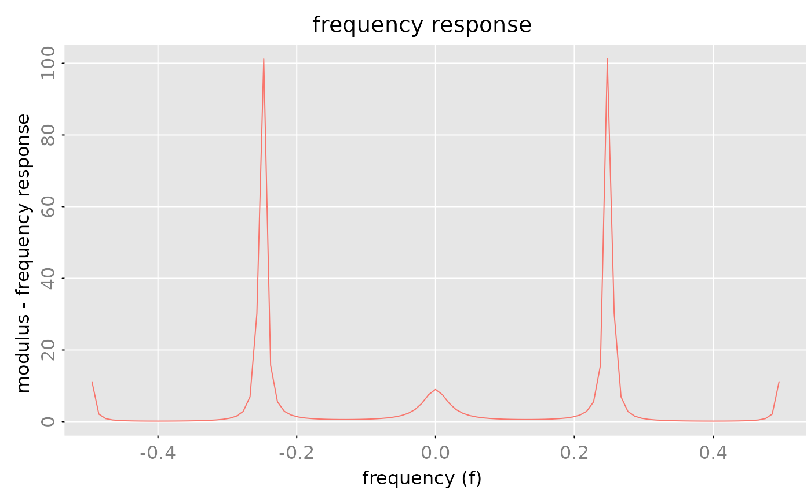
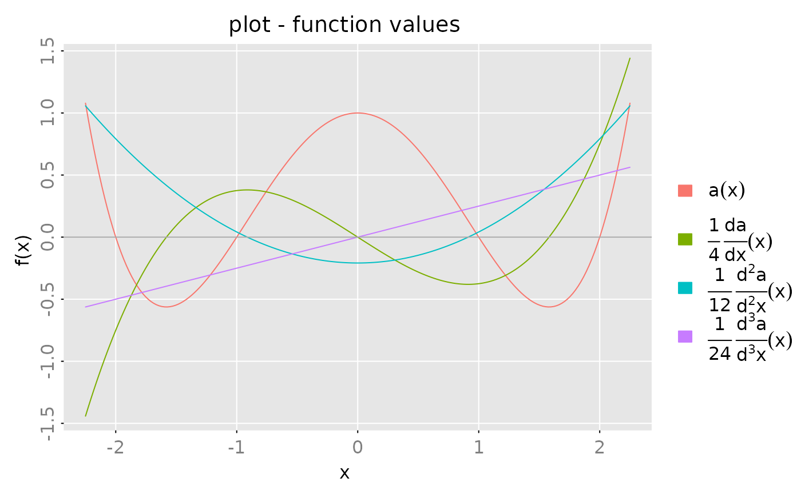
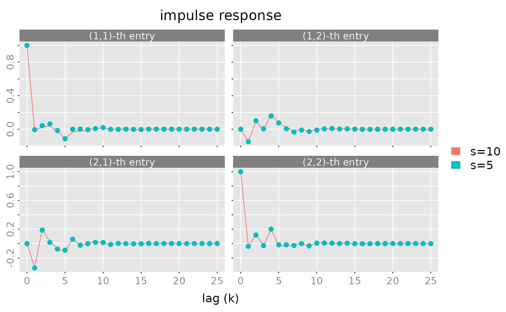
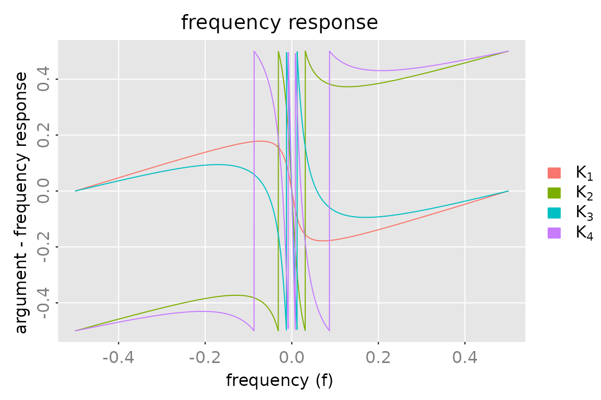
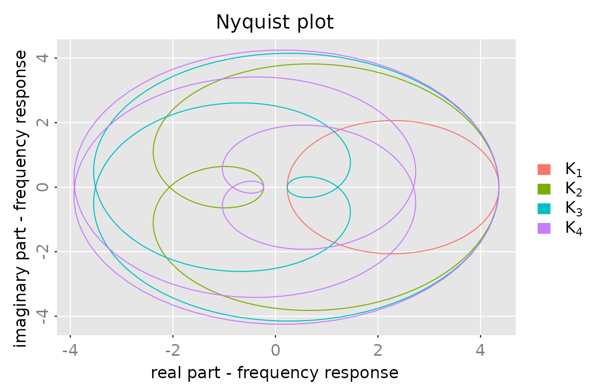
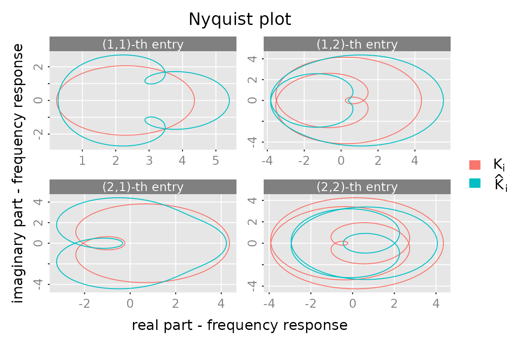

Rational Matrices
Wolfgang Scherrer and Bernd Funovits
2026-01-18
a_rational_matrices.RmdIntroduction
What are Rational Matrices?
The rationalmatrices package handles rational
matrices - matrices whose entries are rational functions of the
lag-operator
(typically
in control theory applications).
A rational function can be represented in many equivalent forms:
- Polynomial:
- Matrix fractions: (left LMFD) or (right RMFD)
- State-space: (standard in control theory)
- Impulse response: (time-domain)
- Frequency response: function values on the unit circle
Design Philosophy
The main goal is to implement classes for rational matrices such that they behave similarly to ordinary matrices. Arithmetic operations should look and feel like standard matrix manipulation, while seamlessly converting between the most appropriate representation for each task.
This package serves as the foundation for RLDM (Rational
Linear Dynamic Models) and is particularly useful for:
- Linear dynamic time series models (VARMA, state-space)
- Control theory and system analysis
- Signal processing and filtering
- Any application requiring multiple mathematical representations of the same object
Guide to This Vignette
This vignette covers the main user-facing functionality. For implementation details and mathematical theory, see the companion vignette “Technical Details”.
Main sections:
- Classes → Representation Management (#1 in CLAUDE.md)
- Operations and Methods → Arithmetic Operations (#3), Polynomial Manipulation (#4), Analysis (#5)
- Realization Algorithms → Realization Algorithms (#2)
- Methods for Polynomials → Polynomial Manipulation (#4)
- Methods for State-Space Forms → State-Space Tools (#6)
Quick start examples follow below:
We start with some basic examples. First we create a scalar polynomial , check that the object is “valid” and print it:
a = polm(c(1,0.9,0.9^2,0.9^3))
is.polm(a)
#> [1] TRUE
print(a, format = 'c')
#> ( 1 x 1 ) matrix polynomial with degree <= 3
#> [,1]
#> [1,] 1 + 0.9z + 0.81z^2 + 0.729z^3Create a scalar rational matrix in LMFD form, check that the object is valid and print it:
c = lmfd(a, c(1, 0, 0.8^2))
is.lmfd(c)
#> [1] TRUE
print(c)
#> ( 1 x 1 ) left matrix fraction description a^(-1)(z) b(z) with degrees (p = 3, q = 2)
#> left factor a(z):
#> z^0 [,1] z^1 [,1] z^2 [,1] z^3 [,1]
#> [1,] 1 0.9 0.81 0.729
#> right factor b(z):
#> z^0 [,1] z^1 [,1] z^2 [,1]
#> [1,] 1 0 0.64Compute poles and zeroes of
poles(c)
#> [1] -1.713307e-16-1.111111i -1.713307e-16+1.111111i -1.111111e+00+0.000000i
zeroes(c)
#> [1] 0-1.25i 0+1.25iEvaluate on the unit circle and check that :
## evaluate
af = zvalues(c$a, n.f = 10)
bf = zvalues(c$b, n.f = 10)
cf = zvalues(c, n.f = 10)
all.equal(cf, af^(-1) %r% bf)
#> [1] TRUE
print(cf, format = 'iz|j', digits = 2)
#> ( 1 x 1 ) frequency response
#> [,1]
#> z=1+0i [1,] 0.48+0.00i
#> z=0.809-0.588i [1,] 0.47+0.19i
#> z=0.309-0.951i [1,] 0.44+0.52i
#> z=-0.309-0.951i [1,] 0.77+0.52i
#> z=-0.809-0.588i [1,] 0.81+1.31i
#> z=-1+0i [1,] 9.06+0.00i
#> z=-0.809+0.588i [1,] 0.81-1.31i
#> z=-0.309+0.951i [1,] 0.77-0.52i
#> z=0.309+0.951i [1,] 0.44-0.52i
#> z=0.809+0.588i [1,] 0.47-0.19iProduce a “Nyquist” plot, where the imaginary part is plotted versus the real part. In order to get a “nice, smooth” path, we evaluate the rational function on a grid of 1024 points on the unit circle:

Classes
Overview of Representations
There are seven major representations (realizations) for rational matrices, each suited to different tasks:
-
Polynomial matrices (
polm) - Direct coefficient representation -
Laurent polynomials (
lpolm) - Allows negative powers -
Left matrix fraction (
lmfd) - For analysis: a⁻¹(z)b(z) -
Right matrix fraction (
rmfd) - Transpose dual: d(z)c⁻¹(z) -
State-space (
stsp) - For computation: C(z⁻¹I-A)⁻¹B+D -
Power series (
pseries) - Impulse response coefficients -
Frequency response (
zvalues) - Values at specific z points
The package enables seamless conversion between all these forms. Furthermore, the coefficients of the power series expansion (here called impulse response function) and a sufficiently rich set of values of the rational matrix (here called frequency response function) uniquely determine the rational matrix and hence may be seen as another way to represent such a rational matrix.
Note: There are no separate classes for rational scalars or rational vectors. A scalar is simply a (1×1) matrix and a vector is a (m×1) or (1×n) matrix.
Representation Conversion Diagram
# Keep original diagram for reference - can be displayed if needed
DiagrammeR::grViz("
digraph G {
compound=true;
splines = lines;
graph [layout = dot, rankdir = LR]
splines = lines
ra [label='polm():\nPolynomial']
ra -> rb;
ra -> rc;
subgraph cluster_repr {
label = 'Matrix Fraction & State-Space'
fontsize = 14
rb [label='lmfd():\nLeft Fraction\na⁻¹(z)b(z)']
rc [label='rmfd():\nRight Fraction\nd(z)c⁻¹(z)']
rd [label = 'stsp():\nState-Space\nC(z⁻¹I-A)⁻¹B+D']
{rank=same; rb,rc,rd}
}
subgraph cluster_pseries {
label = 'Impulse & Frequency Response'
pa [label = 'pseries():\nPower Series']
pz [label = 'zvalues():\nFunction Values']
}
ha [label = 'Hankel Matrix\n(Rank Analysis)' ]
pa -> ha[label = 'via lags']
ha -> rb [label = 'Left\nEchelon', color = 'red']
ha -> rd [label = 'Balanced\nRealization', color = 'red']
rb -> pa [label = 'Extract', color = 'blue']
rd -> pa [label = 'Extract', color = 'blue']
}")The color scheme:
- Red: Realization from Hankel matrix (impulse response)
- Blue: Power series extraction from fractions/state-space
Here, we focus on polynomial matrices and rational matrices represented by a left matrix fraction description or by a statespace realization.
Polynomial Matrices
Polynomial matrices
are represented by objects of class
polm. Such a polm object is simply an
-dimensional
array which stores the coefficients
together with a class attribute c('polm','ratm').
Note: We allow for complex coefficients, empty polynomials ( or ) and zero polynomials ( for all ). Zero polynomials may be represented by an -dimensional array, i.e. the degree is equal to .
The constructor for polynomial matrices is polm(). For
testing purposes one may use test_polm() to create (random)
polynomial matrices.
Left Matrix Fraction Description
Any rational matrix may be represented as , where
is an (non singular) polynomial matrix of degree , and
is an dimensional matrix polynomial of degree .
The matrix is thus described by the pair . Note that the “factors” are by no means unique for given .
Internally such LMFDs are stored as a matrix
with an attribute
order = c(m,n,p,q) and a class attribute
c('lmfd','ratm').
Note: We demand , since it is not clear how to interpret the inverse of an -dimensional matrix. Since is non singular, must hold.
The constructor for lmfd objects is lmfd().
For testing purposes one may use test_lmfd() to create
(random) rational matrices in LMFD form.
Statespace Representation
Any rational (-dimensional) matrix which has no pole at may be represented as
where , , and .
The integer is called the state dimension of the above realization. Statespace representations are by no means unique, even the state dimension is not unique. If the state dimension is minimal among all possible realizations of then the representation is called minimal.
Internally, statespace realizations are stored as a matrix
with an attribute
order = c(m,n,s) and a class attribute
c('stsp','ratm').
Notes:
- E.g. the elementary rational function
does not have a statespace realization of the above form.
- Any of the integers may be zero.
- Many (algebraic) operations are very easy to implement in terms of statespace representations. Therefore, the package is somewhat “biased” towards statespace representations.
The constructor for stsp objects is stsp().
For testing purposes one may use test_stsp() to create
(random) rational matrices in statespace form.
Power Series
Impulse response function or transfer function are also used for the same object.
If the rational matrix has no pole at , then there exists a power series expansion
which converges in a (non-empty) circle around . The sequence of coefficients here is called impulse response function1.
An pseries object stores a finite sequence
as
dimensional array with a class attribute
c('stsp','ratm').
Note: Due to the rational structure, a
finite sequence of coefficients is sufficient to reconstruct
the rational matrix
,
see e.g. the Ho-Kalman realization algorithm (Ho
and Kalman 1966) implemented in pseries2stsp and the
function pseries2lmfd. (Of course the number of
coefficients has to be large enough.) Hence, we can interpret (a finite)
impulse response function as another way to represent rational
matrices.
Frequency Response
A rational matrix is also uniquely determined by a (finite) set of
function values. An object of class zvalues is an
dimensional array (which stores the values
,
together with an attribute z (which is a vector with
components
,
)
and a class attribute c('freqressp','ratm').
If the rational matrix represents the transfer function of a (rational) filter, then often the matrix is evaluated at a grid of points on the unit circle
Notes:
- As stated above the rational function is uniquely determined from a finite (but sufficiently rich) set of values. However, we have not implemented an algorithm which computes an “LMFD” or “statespace” representation for given frequency response.
Operations and Methods
This section covers the main functional areas: - General Methods - Representation Management (#1) - Convert from Class x to Class y - Realization Algorithms (#2) - Arithmetics - Arithmetic Operations (#3) - Poles and Zeroes - Analysis & Properties (#5)
General Methods
-
is.polm(x),is.lmfd(x),is.stsp(x),is.pseries(x),is.zvalues(x)test whether the objectxis a valid (rational matrix) object. -
dim(x)returns a (named) vector with the dimensions of the rational matrix object. - The
strmethods produces a one-line description of rational matrix objects. - The
printmethods tries to produce a compact display of the rational matrix object. -
plotmethods are implemented forpseriesandzvaluesobjects.
Convert from Class x to Class y
An essential goal of the package is to provide tools, which allow a simple conversion of one representation (realization) to another.
The following table gives an overview of these “conversion” procedures:

The colors of the cells mean
- orange-red: does not make sense (in general)
- light-steel-blue: use a two step procure, e.g
as.lmfd(pseries(x, lag.max)) - gold: not (yet) implemented
The core procedures which compute an LMFD or statespace realization for given impules reponse are described in the following subsection. Some more information may be found in the vignette “technical details”.
Realization Algorithms
One of the characteristic features of rational functions is that the Hankel matrix of the impulse response2 coefficients
has finite rank.
If the rational matrix has an LMFD representation , , then
implies that
This implies that the Hankel matrix indeed has finite rank and furthermore that we can construct the matrix from the left kernel of the Hankel matrix. For given and , follows from .
In order to describe the linear dependence structure of the rows of it is convenient to use a “double” index for the rows: Let denote the -th row in the -th block row of , i.e. is the -th row of .
A selection of rows of the Hankel matrix is called a nice selection, if there are no “holes” in the sense that , implies that . Nice selections may be described by a multi-index , where .
Suppose that has rank . In general there are many different selections of rows of which form a basis for the row space of . In the following we choose the first rows of which form a basis of the row space and denote the corresponding selection with . Due to the Hankel structure of this is a nice selection in the above sense. The corresponding ’s are called Kronecker indices of the Hankel matrix (respectively of the rational matrix ). Note that the sum of the Kronecker indices is equal to the rank of : .
For a given (nice) selection of basis rows, one may construct a
unique LMFD representation of the rational matrix. In particular, if we
choose the above described “canonical” basis then one obtains the so
called echelon form left matrix fraction description of the
rational matrix. This procedure is implemented in the tool
pseries2lmfd(). The S3 method
as.lmfd.pseries() is just a wrapper function, which calls
pseries2lmfd() with some default parameters.
Quite analogously one may also construct a statespace realization of
with the Ho-Kalman algorithm. See the tools
pseries2stsp() and as.stsp.pseries().
For a more detailed discussion on Kronecker indices and echelon canonical forms, see Hannan and Deistler (2012).
Examples
We first create a random rational matrix in statespace form with a state dimension . Generically the first rows of the Hankel matrix form a basis and hence the Kronecker indices are and :
# create a random rational matrix in statespace form
X = test_stsp(dim = c(2,2), s = 5, digits = 2)
X
#> statespace realization [2,2] with s = 5 states
#> s[1] s[2] s[3] s[4] s[5] u[1] u[2]
#> s[1] -1.40 -0.25 0.51 0.36 -0.83 -0.13 0.07
#> s[2] 0.26 -0.24 -1.86 -1.30 -1.51 -1.91 -0.64
#> s[3] -2.44 -0.28 -0.52 0.74 0.94 -0.28 -0.05
#> s[4] -0.01 -0.55 -0.05 1.89 0.18 -0.31 -0.25
#> s[5] 0.62 0.63 0.54 -0.10 0.24 1.07 0.44
#> x[1] 1.15 2.07 -0.91 -0.94 1.62 1.00 0.00
#> x[2] -1.82 -1.63 0.47 -0.02 0.11 0.00 1.00
# compute the impulse response function,
# the Kornecker indices and the corresponding indices of the "basis" rows.
K = pseries(X, lag.max = 10)
nu = pseries2nu(K)
cat('Kronecker indices: ', nu,'\n',
' basis rows: ', nu2basis(nu))
#> Kronecker indices: 3 2
#> basis rows: 1 2 3 4 5Next we take the impulse response function and compute a statespace realization of this rational matrix in echelon form:
X = pseries2stsp(K, method = 'echelon')$Xs
print(X, digits = 2)
#> statespace realization [2,2] with s = 5 states
#> s[1] s[2] s[3] s[4] s[5] u[1] u[2]
#> s[1] 0.00 0.00 1.00 0.00 0.00 -1.82 -0.25
#> s[2] 0.00 0.00 0.00 1.00 0.00 3.34 0.95
#> s[3] 0.00 0.00 0.00 0.00 1.00 -5.21 -1.25
#> s[4] -0.95 -5.48 -4.19 -1.43 1.43 2.01 0.98
#> s[5] 1.74 2.58 1.75 2.52 1.40 -2.51 -0.07
#> x[1] 1.00 0.00 0.00 0.00 0.00 1.00 0.00
#> x[2] 0.00 1.00 0.00 0.00 0.00 0.00 1.00
# check the result
all.equal(pseries(X, lag.max = 10), K)
#> [1] TRUEWe may also create a rational matrix with prescribed Kronecker indices. Here we generate a matrix with Kronecker indices and in addition we demand that the matrix is stable. i.e. the matrix no poles inside the unit circle:
nu = c(2,3,1)
X = test_stsp(dim = c(3,2), nu = nu, D = matrix(c(1,NA,NA, 0, 1, NA), nrow = 3, ncol = 2),
digits = 2, bpoles = 1)
X
#> statespace realization [3,2] with s = 6 states
#> s[1] s[2] s[3] s[4] s[5] s[6] u[1] u[2]
#> s[1] 0.00 0.00 0.00 1.00 0.00 0.00 -0.27 0.47
#> s[2] 0.00 0.00 0.00 0.00 1.00 0.00 -0.37 0.13
#> s[3] 0.59 -0.21 0.41 -0.04 -0.32 0.00 -0.38 -0.13
#> s[4] -0.15 -0.33 0.31 0.38 0.42 0.00 -0.13 -0.04
#> s[5] 0.00 0.00 0.00 0.00 0.00 1.00 0.44 0.01
#> s[6] 0.70 -0.13 0.70 -0.66 -0.07 0.07 0.16 0.15
#> x[1] 1.00 0.00 0.00 0.00 0.00 0.00 1.00 0.00
#> x[2] 0.00 1.00 0.00 0.00 0.00 0.00 -0.18 1.00
#> x[3] 0.00 0.00 1.00 0.00 0.00 0.00 -0.05 0.01
# compute impulse response
K = pseries(X, lag.max = 10)
# and check the Kronecker indices
all.equal(pseries2nu(K), nu)
#> [1] TRUEAn LMFD realization of this matrix is obtained a s follows
X = pseries2lmfd(K)$Xl
X
#> ( 3 x 2 ) left matrix fraction description a^(-1)(z) b(z) with degrees (p = 3, q = 3)
#> left factor a(z):
#> z^0 [,1] [,2] [,3] z^1 [,1] [,2] [,3] z^2 [,1] [,2] [,3] z^3 [,1]
#> [1,] 1.00 0.00 0 -0.38 -0.42 0.00 0.15 0.33 -0.31 0.0
#> [2,] 0.00 1.00 0 0.00 -0.07 0.00 0.66 0.07 0.00 -0.7
#> [3,] 0.04 0.32 1 -0.59 0.21 -0.41 0.00 0.00 0.00 0.0
#> [,2] [,3]
#> [1,] 0.00 0.0
#> [2,] 0.13 -0.7
#> [3,] 0.00 0.0
#> right factor b(z):
#> z^0 [,1] [,2] z^1 [,1] [,2] z^2 [,1] [,2] z^3 [,1] [,2]
#> [1,] 1.0000 0.00 -0.5744 0.0500 0.2341 0.0537 0.0000 0.0000
#> [2,] -0.1800 1.00 -0.3574 0.0600 1.1133 0.0709 -0.7633 0.5916
#> [3,] -0.0676 0.33 -1.1165 0.1363 0.0000 0.0000 0.0000 0.0000
all.equal(pseries(X, lag.max = 10), K)
#> [1] TRUEThe set
does not correspond to a nice selection of rows of a Hankel
matrix (with
).
The corresponding set of rows (using the above described “double
indices”) is
.
The set
contains the row
but not the row
and hence it is not a nice selection. Therefore the function
basis2nu throws an error, if we try to compute the
correponding Kronecker indices:
Arithmetics
The group method function Ops.ratm() allows to perform
arithmetic operations on rational matrices using ordinary arithmetic
operators.
The Unary Operators +a and
-a
These operators have the usual meaning and are implemented for all rational matrix classes.
The Power Operator a^k
The power operator a^k is only implemented for square,
rational matrices
and integers
.
-
a^0works for all classes and returns the identity matrix, represented by an object of the same class as the input argumenta. Note: This means e.g. ! -
a^1works for all classes and simply returns the input argumenta. -
a^kfor is implemented for all classes. Howeverlmfdobjects are first coerced to statespace realizations. Thus the result in this case is an object of classstsp. In all other cases, the result is of the same class as the input argumenta. -
a^kfor is implemented for all classes. However, must be non empty and objects of classpolmandlmfdare first coerced tostspobjects. This means that the result has classstspif the input is apolm,lmfdorstspobject and it has classpseriesorzvaluesif the input is anpseriesrespectivelyzvaluesobject.
Binary Operators
For the binary operators (like ‘a + b’) the two arguments are first coerced to a common class. To this end we use the following pseudo ordering of classes:
matrix
polm
lmfd
stsp
pseries
zvalues
The following table shows how the class of the result depends on the
classes of a and b:

Note:
- Objects which are not “rational matrices” are first coerced to
polmobjects. If this fails an error is thrown. In the above table this case is represented by the labelmatrix. -
lmfdobjects are first coerced tostspobjects. - If two
pseriesobjects are combined then they are truncated to the minimum of the respective number of “lags”. - Two
zvaluesobjects are only combined if the “z” values are identical. Otherwise an error is thrown. - The statespace realizations computed are in general not
minimal. This remark also applies to other operations, like the
power
a^k. - Of course the two arguments must be compatible, e.g. for elementwise operations they must have the same number of rows and columns. However for elementwise operations one of the arguments may be a scalar, i.e. a matrix. Such arguments are “expanded” to matrices (of compatible dimension) with identical elements.
- There is no automatic coercion of
pseriesobjects tozvaluesobjects, since there is no guarantee that thepseriesobject has sufficiently many lags. Of course the user may perform this coercion manually.
The above table applies for
- addition
a+b - substraction
a-b - elementwise multiplication
a * b - matrix multiplication
a %r% b - bind operations
rbind(a,b,...)andcbind(a,b,...)
The polynomial division and remainder operators a %/% b
and a %% b are only implemented for polm
objects or objects which may coerced to polm objects. These
operations are also elementwise operations and hence the above remark on
scalar arguments applies here.
Transposition of Rational Matrices
“Ordinary” transpose
The transposition operator (function) t(x) is
implemented for all classes, except for lmfd objects,
i.e. rational matrices in LMFD form (and should work as expected).
As an example consider the construction of a Right Matrix Fraction Description of a rational matrix . The trick is simply to construct an LMFD of the transpose , then is the desired RMFD of :
# create random rational, stable, (3 x 2) matrix in statespace form
x = test_stsp(dim = c(3,2), s = 2, bpoles = 1)
# compute the impulse response
k = pseries(x, lag.max = 5)
# Compute an LMFD realization of the transpose
tx = as.lmfd(t(k))
a = t(tx$a)
b = t(tx$b)
# check
all.equal(zvalues(x), zvalues(b) %r% (zvalues(a)^{-1}))
#> [1] TRUEHermitean transpose
-
The Hermitean transpose
Ht(x)is only implemented for frequency response objects and statespace realizations with a regular state transition matrix .
The Hermitean transpose of a rational matrix is defined as If has real coefficients and then .As an example consider
(a = as.stsp(lmfd(c(1,0.1,0.1,0.1,-0.8),c(1,0.5))))
#> statespace realization [1,1] with s = 4 states
#> s[1] s[2] s[3] s[4] u[1]
#> s[1] -0.1 -0.1 -0.1 0.8 0.7866
#> s[2] 1.0 0.0 0.0 0.0 -0.1260
#> s[3] 0.0 1.0 0.0 0.0 -0.1400
#> s[4] 0.0 0.0 1.0 0.0 0.4000
#> x[1] 0.0 0.0 0.0 1.0 1.0000
fr = zvalues(a, n.f = 101)
sp = fr %r% Ht(fr)
max(abs(Im(sp)))
#> [1] 0
all.equal(sp, zvalues(a %r% Ht(a), n.f = 101))
#> [1] TRUE
plot(sp)
The Hermitean transpose plays an important role for the spectral density of VARMA processes and processes which are defined via statespace models.
Bind Rational Matrices by Rows and Columns
The methods
-
rbind(...)and cbind(...)
have their usual meaning, i.e. they take a list of rational matrix
objects and combine them by rows or columns. Before the matrices are
combined they are coerced to objects of the same class, as described in
the section on arithmetic operations. In particular note that
lmfd objects are coerced to stsp objects!
Howver, if only one argument is given then no coercion is performed,
i.e. if x is an lmfd object then
bind(x) returns an lmfd object.
Note that the statespace realizations in general are
not minimal. The number of lags for
pseries objects is the minimum of the number of lags of
each of them. Objects of class zvalues are only combined if
their z attributes (the complex points where the rational
function(s) have been evaluated) are identical.
Extract Parts, Replace Parts
The subsetting operation x[,] for rational matrices
works analogously to the subsetting of ordinary matrices. The result is
an object of the same class. However, this operator is not implemented
for lmfd objects. Hence x[i,j] throws an error
if x is an lmfd object!
-
x[]andx[,]simply return the objectx. -
x[i]returns an dimensional matrix with elements selected by the indexi. -
x[i,j]returns a matrix with rows selected byiand columns selected byj.
x = test_polm(dim = c(2,3), degree = 2)
x
#> ( 2 x 3 ) matrix polynomial with degree <= 2
#> z^0 [,1] [,2] [,3] z^1 [,1] [,2] [,3] z^2 [,1] [,2] [,3]
#> [1,] 110 120 130 111 121 131 112 122 132
#> [2,] 210 220 230 211 221 231 212 222 232
x[,]
#> ( 2 x 3 ) matrix polynomial with degree <= 2
#> z^0 [,1] [,2] [,3] z^1 [,1] [,2] [,3] z^2 [,1] [,2] [,3]
#> [1,] 110 120 130 111 121 131 112 122 132
#> [2,] 210 220 230 211 221 231 212 222 232
x[c(1,2,6)]
#> ( 3 x 1 ) matrix polynomial with degree <= 2
#> z^0 [,1] z^1 [,1] z^2 [,1]
#> [1,] 110 111 112
#> [2,] 210 211 212
#> [3,] 230 231 232
x[c(2,1), c(2,2,2)]
#> ( 2 x 3 ) matrix polynomial with degree <= 2
#> z^0 [,1] [,2] [,3] z^1 [,1] [,2] [,3] z^2 [,1] [,2] [,3]
#> [1,] 220 220 220 221 221 221 222 222 222
#> [2,] 120 120 120 121 121 121 122 122 122
x = test_stsp(dim = c(3,3), s = 6)
# the statements pseries(x[c(2,4)]) and pseries(x)[c(2,4)] are equivalent
all.equal(pseries(x[c(2,4)]), pseries(x)[c(2,4)])
#> [1] TRUE
x = test_lmfd(dim = c(2,3), degrees = c(1,1))
try(x[,]) # throws an error
#> ( 2 x 3 ) left matrix fraction description a^(-1)(z) b(z) with degrees (p = 1, q = 1)
#> left factor a(z):
#> z^0 [,1] [,2] z^1 [,1] [,2]
#> [1,] 1 0 0.1056647 1.6418480
#> [2,] 0 1 -0.3335997 -0.6439059
#> right factor b(z):
#> z^0 [,1] [,2] [,3] z^1 [,1] [,2] [,3]
#> [1,] 0.5870206 -1.710822 -2.645212 -0.7074664 0.5378854 -0.8396228
#> [2,] -0.1504031 1.431033 -1.032457 -0.7005600 -0.3163322 -1.3549281The $ operator may be used to extract the
,
polynomial of a left matrix fraction description (lmfd
object) and the matrices
of a state space representation (stsp object).
# extract a(z) polynomial
x$a
#> ( 2 x 2 ) matrix polynomial with degree <= 1
#> z^0 [,1] [,2] z^1 [,1] [,2]
#> [1,] 1 0 0.1056647 1.6418480
#> [2,] 0 1 -0.3335997 -0.6439059The assigment operation x[,] <- value is only
implemented for polynomial matrices and works quite analogously to the
assigment operation of “ordinary” matrices.
a = test_polm(dim = c(3,2), degree = 1)
print(a, format = 'c')
#> ( 3 x 2 ) matrix polynomial with degree <= 1
#> [,1] [,2]
#> [1,] 110 + 111z 120 + 121z
#> [2,] 210 + 211z 220 + 221z
#> [3,] 310 + 311z 320 + 321z
# no items to replace, a is not changed
a[FALSE] = 0
print(a, format = 'c')
#> ( 3 x 2 ) matrix polynomial with degree <= 1
#> [,1] [,2]
#> [1,] 110 + 111z 120 + 121z
#> [2,] 210 + 211z 220 + 221z
#> [3,] 310 + 311z 320 + 321z
# set elements below the diagonal equal to zero
a[lower.tri(matrix(0, nrow = 3, ncol = 2))] = 0
print(a, format = 'c')
#> ( 3 x 2 ) matrix polynomial with degree <= 1
#> [,1] [,2]
#> [1,] 110 + 111z 120 + 121z
#> [2,] 0 220 + 221z
#> [3,] 0 0
# set (3,1) element
a[3,1] = c(1,-1)
print(a, format = 'c')
#> ( 3 x 2 ) matrix polynomial with degree <= 1
#> [,1] [,2]
#> [1,] 110 + 111z 120 + 121z
#> [2,] 0 220 + 221z
#> [3,] 1 - z 0
# set the elements in the first two rows and columns
a[1:2, 2:1] = array(c(1,0,0,0,0,1,0,0,0,0,1,0,0,0,0,1),
dim = c(2,2,4))
print(a, format = 'c')
#> ( 3 x 2 ) matrix polynomial with degree <= 3
#> [,1] [,2]
#> [1,] z^2 1
#> [2,] z^3 z
#> [3,] 1 - z 0
# this produces a warning,
# left hand side refers to 3 elements but
# the right hand side has 2 elements!
a[, 1] = test_polm(dim = c(2,1), degree = 4)
#> Warning in `[<-.polm`(`*tmp*`, , 1, value = structure(c(110, 210, 111, 211, :
#> number of items to replace is not a multiple of replacement length
print(a, format = 'c')
#> ( 3 x 2 ) matrix polynomial with degree <= 4
#> [,1] [,2]
#> [1,] 110 + 111z + 112z^2 + 113z^3 + 114z^4 1
#> [2,] 210 + 211z + 212z^2 + 213z^3 + 214z^4 z
#> [3,] 110 + 111z + 112z^2 + 113z^3 + 114z^4 0Note: The subsetting and the assigment operators do not allow “named” arguments. Therefore the following statements throw an error
Poles and Zeroes
Polynomials
The zeroes of a square ()-dimensional, non singular polynomial matrix , with are the reciprocals of the non zero eigenvalues of the companion matrix
This fact is used by zeroes.polm. However, there are
some problems with this (simple) approach.
- It does not work for polynomials with a zero at
(
is singular). An alternative is to use the function
is.coprimewhich uses a (singular) pencil. See the examples below. - Due to numerical errors the function
eigen(which is used to compute the eigenvalues of the companion matrix) may return some (very small) eigenvalues instead of exact zeroes. The functionzeroes.polmtherefore skips all eigenvalues which are smaller than a certain threshold. If the optionprint_messageis set toTRUEthen a corresponding message is printed. Clearly, choosing a too small tolerance bound may result in some very large “spurious”” zeroes. On the other hand if the bound is too large, then some of the “true” zeroes may be skipped.
To summarize. There are numerical problems if the coefficient is ill conditioned or if the companion matrix is (close to) singular.
# polynomial with degree p = 0 ##############################
zeroes(polm(diag(3))) # returns empty vector
#> numeric(0)
# (2 x 2) polynomial with degree 2 ##########################
a = test_polm(dim = c(2,2), degree = 2)
(z = zeroes(a))
#> [1] -0.5-0.8660254i -0.5+0.8660254i -0.5-0.8660254i -0.5+0.8660254i
# check the rank of a(z) at the computed zeroes
az = unclass(zvalues(a, z))
apply(az, MARGIN = 3, FUN = function(x) {d = svd(x)$d; min(d)/max(d)})
#> [1] 5.368273e-14 5.368273e-14 5.364620e-14 5.364620e-14
# (2 x 2) polynomial with degree 2 ##########################
# and singular coefficient matrix a[2]
a = test_polm(dim = c(2,2), degree = 2,
col_end_matrix = matrix(1, nrow = 2, ncol =2) )
(z = zeroes(a))
#> [1] -0.5-0.8660254i -0.5+0.8660254i -0.5-0.8660254i -0.5+0.8660254i
# alternatively, we may also use is.coprime()
is.coprime(a, only.answer = FALSE)$zeroes
#> [1] -0.5+0.8660254i -0.5-0.8660254i -0.5+0.8660254i -0.5-0.8660254i
# (2x2) polynomial matrix with degree 2 #####################
# and singular coefficient matrix a[0]
a = polm(dbind(d = 3, matrix(1, nrow = 2, ncol = 2),
test_array(dim = c(2,2,2))))
# zeroes(a) throws an error!
try(zeroes(a))
#> Error in zeroes.polm(a) :
#> Could not generate companion matrix. Coefficient pertaining to smallest degree might be singular.
# However, we may use is.coprime() in this case
is.coprime(a, only.answer = FALSE)$zeroes
#> [1] -1.000000e+00+1.28135e-08i -1.000000e+00-1.28135e-08i
#> [3] -4.163125e-10+0.00000e+00i 4.163124e-10+0.00000e+00iLeft Matrix Fraction Descriptions
Suppose is an dimensional rational matrix ( and are polynomials). If are left coprime then the poles of are the zeroes of . Furthermore if is square, then the zeroes of are the zeroes of .
Therefore the methods poles.lmfd and
zeroes.lmfd simply use zeroes.polm in order to
compute poles and zeroes of a rational matrix given in LMFD form. This
implies that all the above caveats also apply here. E.g. the methods
only work for the case that
(respectively
)
is non singular.
In addition the routines do not provide the correct answers in the
case that the pair
is not left coprime. Here a pole/zero cancellation may occur,
which is not taken into account by the methods poles.lmfd
and zeroes.lmfd. This means that the functions may return
some spurious poles and zeroes.
# create a random rational (2 x 2) matrix in LMFD form with p = 1, q = 2
# note that two random polynomials are "generically" left coprime
set.seed(8924)
a = test_polm(dim = c(2,2), degree = 1, random = TRUE)
b = test_polm(dim = c(2,2), degree = 2, random = TRUE)
c = lmfd(a,b)
# poles of c=a^{-1}b are the zeroes of a
poles(c)
#> [1] 0.4136219 -0.9481900
all.equal(sort(poles(c)), sort(zeroes(a)))
#> [1] TRUE
# zeroes of c=a^{-1}b are the zeroes of b
zeroes(c)
#> [1] 0.01188418+0.0000000i -0.44699481+0.0000000i -0.07539272-0.8587459i
#> [4] -0.07539272+0.8587459i
all.equal(sort(zeroes(c)), sort(zeroes(b)))
#> [1] TRUENow we construct an LMFD where a,b are not coprime. We simply simply multiply the above matrices with a common factor and note that .
# generate random common factor
r = test_polm(dim = c(2,2), degree = 1, random = TRUE)
ra = r %r% a
rb = r %r% b
cc = lmfd(ra,rb)
# here we get two "spurious" poles/zeroes
(pz = round(poles(cc), 6))
#> [1] 0.413622 -0.817746 -0.948190 2.707221
(zz = round(zeroes(cc), 6))
#> [1] 0.011884+0.000000i -0.446995+0.000000i -0.817746+0.000000i
#> [4] -0.075393-0.858746i -0.075393+0.858746i 2.707221+0.000000i
# the zeroes of r pop up as poles and zeroes of cc
sort(round(zeroes(r), 6))
#> [1] -0.817746 2.707221
sort(intersect(pz, zz))
#> [1] -0.817746+0i 2.707221+0i
set.seed(NULL)Statespace Representation
Let be a rational matrix, given in state space form. If the statespace representation is minimal then the poles of are the reciprocals of the non zero eigenvalues of . Furthermore if is square and if is regular (i.e. if is regular) then the zeroes of are the reciprocals of the eigenvalues of the matrix .
The methods poles.stsp and zeroes.stsp
therefore compute the poles (and zeroes) of
via the eigenvalues of
(respectively of
).
However, they do not check whether the statespace realization is
minimal.
Here analogous warnings are in place as for the polynomial and the LMFD case:
- The procedures may return “spurious” poles or zeroes if the representation is not minimal.
- The procedures use a threshold (
tol) in order to decide whether a small eigenvalue returned byeigenis due to a “true zero” eigenvalue or not. - The computation of zeroes is only implemented for the case that has no zero at . If is ill conditioned then the results may be unreliable.
Checks
-
is.stable()checks whether the rational matrix has no poles on or withing the unit circle. -
is.miniphase()checks whether the rational matrix has no zeroes on or within the unit circle.
These test function just return TRUE or
FALSE. The poles and zeroes of the rational matrix are
computed via the functions poles and zeroes
respectively. Hence the above caveats also apply here.
For pseries and zvalues objects the
functions return NA.
is.coprime()
A polynomial matrix is called left prime, if has full row rank everywhere in the complex plane. Clearly this implies that is square or “wide”, i.e. if is -dimensional then must hold.
A pair of (compatible) polynomial matrices is called left coprime if the matrix is left prime. This case is important for the structure of left matrix fraction descriptions. Suppose , where is a square, non singular polynomial matrix. If the pair is is not left coprime, then we may cancel a common, non unimodular, factor and thus obtain a “simpler” representation for .
The function is.coprime may be called with the following
syntax:
-
test_coprime(c)wherecis anlmfdobject, which represents a rational matrix , checks whether the pair is left coprime.
-
test_coprime(a)whereais anpolmobject, which represents a polynomial matrix , checks whether is left prime.
-
test_coprime(a,b)wherea,barepolmobjects, which represent the polynomial matrices and , checks whether the pair is left coprime.
For implementation details see the vignette .
is.minimal()
A statespace realization is minimal if and only if the Hankel matrix of the impulse response coefficients ,
has rank
.
Therefore the procedure is.minimal() computes the SVD of
this matrix and returns TRUE if the
-th
singular value is larger than a given threshold tol.
In order to check whether the statespace realization is observable
and/or controllable one may consider the observability and
controllability matrices (which may be computed with
obs_matrix and ctr_matrix) or the
corresponding Grammians (see grammians).
x = test_stsp(dim = c(2,2), s = 2)
is.minimal(x)
#> [1] TRUENote that operations on stsp objects may return non
minimal realizations. E.g.:
is.minimal(rbind(x, x), only.answer = FALSE)[c('answer','sv','s0')]
#> $answer
#> [1] FALSE
#>
#> $sv
#> [1] 6.300395e+01 5.292349e+01 7.700432e-15 3.743904e-15 2.753267e-15
#> [6] 1.399977e-15 1.046407e-15 4.476098e-16
#>
#> $s0
#> [1] 2
is.minimal(x %r% (x^(-1)), only.answer = FALSE)[c('answer','sv','s0')]
#> $answer
#> [1] FALSE
#>
#> $sv
#> [1] 1.136170e-12 1.900404e-13 7.902990e-14 2.577351e-14 3.080105e-15
#> [6] 1.323681e-15 3.842298e-16 3.872231e-17
#>
#> $s0
#> [1] 0Here s0 is an estimate of the minimal statespace
dimension.
In order to construct a minimal realization one may use the procedure
balance.
Derivatives
The derivative of a rational function (with respect to the argument
)
may be computed with the S3 method derivative.
However, lmfd and zvalues objects are not
supported.
As a simply example consider a polynomial of degree and its derivatives:
a = polm(1)
for (x in c(-2,-1,1,2)) {
a = a * polm(c(1, -1/x))
}
print(a, format = 'c')
#> ( 1 x 1 ) matrix polynomial with degree <= 4
#> [,1]
#> [1,] 1 - 1.25z^2 + 0.25z^4
z = seq(from = -2.25, to = 2.25, length.out = 201)
out = plot(zvalues(a, z = z), x_list = list(zvalues(derivative(a)*(1/4), z = z),
zvalues(derivative(derivative(a))*(1/12), z = z),
zvalues(derivative(derivative(derivative(a)))*(1/24), z = z)),
which = 'real', legend = c(expression(a(x)), expression(frac(1,4)~frac(d*a,d*x)(x)),
expression(frac(1,12)~frac(d^2*a,d^2*x)(x)),
expression(frac(1,24)~frac(d^3*a,d^3*x)(x))))
opar = out(1,1)
abline(h=0, col = 'darkgray')
par(opar)Note that computing the derivative for an impulse response object decreases the number of lags by one!
x = test_stsp(dim = c(2,2), s = 12)
all.equal(pseries(derivative(x), lag.max = 10),
derivative(pseries(x, lag.max = 11)))
#> [1] TRUEMethods for Polynomials
This section implements Polynomial Manipulation (#4 in CLAUDE.md) and related analysis tools.
Normal Forms
The package contains functions which compute some of the most important “normal forms” of polynomial matrices, e.g. the Smith normal form. However, we should note that the computation of such normal form is numerically quite tricky and that the implementation here is rather simple minded. Therefore these functions may fail for large, complex polynomial matrices.
Hermite Normal Form
Any polynomial matrix can be transformed to a “quasi-upper-triangular” matrix by elementary row operations, i.e. by multiplication with a unimodular matrix from the left. Suppose that is an dimensional matrix with rank . Then is the column Hermite form of , if is unimodular and if there exist integers such that
- is monic (the coefficient pertaining to the highest degree is equal to one),
- the elements above have lower polynomial degree than and
- for or .
See also Kailath (1980).
Quite analogously one may transform the matrix by elementary column operations into “quasi-lower-triangular” form . The corresponding normal form is called row Hermite form.
a = polm(array(c(-0.4, -1.3, -0.3, 0.6, 1.1, 1,
-1.7, 0, -0.8, -0.3, 3.2, -0.4), dim = c(2,3,2)))
print(a, format = 'c')
#> ( 2 x 3 ) matrix polynomial with degree <= 1
#> [,1] [,2] [,3]
#> [1,] -0.4 - 1.7z -0.3 - 0.8z 1.1 + 3.2z
#> [2,] -1.3 0.6 - 0.3z 1 - 0.4z
out = hnf(a)
print(out$h, format = 'c', digits = 1)
#> ( 2 x 3 ) matrix polynomial with degree <= 2
#> [,1] [,2] [,3]
#> [1,] 1 -0.5 + 0.2z -0.8 + 0.3z
#> [2,] 0 -1.2 - 3.8z + z^2 2 + 5.1z + 1.3z^2
# check the result(s)
all.equal(a, prune(out$u %r% out$h))
#> [1] TRUE
all.equal(polm(diag(2)), prune(out$u %r% out$u_inv))
#> [1] TRUEThe row Hermite form may be obtained by calling the function
hnf() with the options from_left=FALSE.
out = hnf(a, from_left = FALSE)
print(out$h, format = 'c', digits = 1)
#> ( 2 x 3 ) matrix polynomial with degree <= 0
#> [,1] [,2] [,3]
#> [1,] 1 0 0
#> [2,] 0 1 0
# check the result(s)
all.equal(a, prune(out$h %r% out$u))
#> [1] TRUE
all.equal(polm(diag(3)), prune(out$u %r% out$u_inv))
#> [1] TRUENote that for the polynomial
considered in the above R demonstration(s), the row Hermite
form is particularly simple, since
is left prime. See also the discussion about left (co)prime
matrices in the vignette “Technical Details”.
The following example is a
dimensional polynomial matrix with rank
.
The function hnf() returns an “estimate” of the rank and
the “pivots”
.
a = polm(array(c(0,0,0,2,-1,1,2,-1,1,6,-3,3,3,0,2,0,0,0,2,-1,
1,-2,1,-1,3,0,2,-8,1,-5,0,0,0,0,0,0,0,0,0,1,1,1,1,1,1), dim = c(3,5,3)))
print(a, format = 'c')
#> ( 3 x 5 ) matrix polynomial with degree <= 2
#> [,1] [,2] [,3] [,4] [,5]
#> [1,] 0 2 + 2z 2 - 2z 6 + 3z + z^2 3 - 8z + z^2
#> [2,] 0 -1 - z -1 + z -3 + z^2 z + z^2
#> [3,] 0 1 + z 1 - z 3 + 2z + z^2 2 - 5z + z^2
out = hnf(a)
print(out$h, format = 'c', digits = 1)
#> ( 3 x 5 ) matrix polynomial with degree <= 2
#> [,1] [,2] [,3] [,4] [,5]
#> [1,] 0 1 + z 1 - z 3 + z 1 - 3z
#> [2,] 0 0 0 z + z^2 1 - 2z + z^2
#> [3,] 0 0 0 0 0
print(out$rank) # the rank of a(z) is 2
#> [1] 2
print(out$pivots) # the columns 2 and 4 are linearly independent.
#> [1] 2 4
# check the result(s)
all.equal(a, prune(out$u %r% out$h))
#> [1] TRUE
all.equal(polm(diag(3)), prune(out$u %r% out$u_inv))
#> [1] TRUESmith Normal Form
For any dimensional polynomial matrix with rank there exists a factorization
where and are two unimodular matrices and is an dimensional quasi-diagonal matrix with diagonal entries which satisfy
- is monic for and zero for , and
- divides for .
The above factorization may be constructed by using elementary column- and row- operations.
For more details, see e.g. Kailath (1980).
As a simple example consider the following dimensional polynomial matrix
set.seed(1234) # set seed for random number generation
z = polm(c(0,1))
a = matrix(c( 3, 2, 1,-3,-2,-1,0,0,0), nrow = 3, ncol = 3) - z*polm(diag(3))
# inflate this 3x3 matrix to a 4x5 matrix
a = matrix(sample(c(-1:1), 4*3, replace = TRUE), nrow = 4, ncol = 3) %r% a
a = a %r% matrix(sample(c(-1:1), 3*5, replace = TRUE), nrow = 3, ncol = 5)
print(a, format='c')
#> ( 4 x 5 ) matrix polynomial with degree <= 1
#> [,1] [,2] [,3] [,4] [,5]
#> [1,] -1 z 0 1 + z -z
#> [2,] -2 0 z 2 0
#> [3,] -3 + z 0 z 3 - z 0
#> [4,] 3 - z 0 -z -3 + z 0
out = snf(a)
print(out$s, digits = 2, format = 'c')
#> ( 4 x 5 ) matrix polynomial with degree <= 2
#> [,1] [,2] [,3] [,4] [,5]
#> [1,] 1 0 0 0 0
#> [2,] 0 z 0 0 0
#> [3,] 0 0 -z + z^2 0 0
#> [4,] 0 0 0 0 0
# check result(s)
all.equal(a, prune(out$u %r% out$s %r% out$v))
#> [1] TRUE
# reset seed
set.seed(NULL)Column Reduced Form
Let be , polynomial matrix with column degrees , . The column end matrix of is the matrix with -th column equal to the -th column of the coefficient matrix .
If is square and if the column end matrix is regular, then is called column reduced.
Any non singular, square polynomial matrix may be transformed to a column reduced matrix by a sequence of elementary column operations. This means there exists a unimodular matrix such that is column reduced.
This task is accomplished by the helper function
col_reduce(a, ...).
As an example consider a random , polynomial matrix whose column end matrix has rank 1:
# create a random (3 x 3) polynmial matrix with a column end matrix of rank 1
col_end_matrix = matrix(round(rnorm(3),1), nrow = 3, ncol = 1) %*%
matrix(round(rnorm(3),1), nrow = 1, ncol = 3)
a = test_polm(dim = c(3,3), degree = c(2,1,1), random = TRUE,
digits = 2, col_end_matrix = col_end_matrix)
print(a, format = 'c')
#> ( 3 x 3 ) matrix polynomial with degree <= 2
#> [,1] [,2] [,3]
#> [1,] -0.63 + 1.77z + 0.4z^2 -0.88 + 0.5z -0.48 + 0.4z
#> [2,] 0.69 - 0.01z - 0.08z^2 -0.89 - 0.1z 1.05 - 0.08z
#> [3,] -1.31 - 0.31z - 0.8z^2 0.26 - z 0.54 - 0.8z
print(svd(col_end_matrix(a))$d) # column end matrix has rank 1
#> [1] 1.694934e+00 1.695651e-16 9.628233e-18
out = col_reduce(a)
print(out$a, format = 'c', digits = 2) # column reduced matrix
#> ( 3 x 3 ) matrix polynomial with degree <= 1
#> [,1] [,2] [,3]
#> [1,] -0.88 + 0.5z -0.63 + 2.25z 0.22
#> [2,] -0.89 - 0.1z 0.69 - 1.06z 1.76
#> [3,] 0.26 - z -1.31 - 0.85z 0.33
print(out$col_degrees) # column degrees
#> [1] 1 1 0
print(out$col_end_matrix) # column end matrix
#> [,1] [,2] [,3]
#> [1,] 0.5 2.25 0.224
#> [2,] -0.1 -1.06 1.762
#> [3,] -1.0 -0.85 0.332
print(svd(out$col_end_matrix)$d) # column end matrix is non singular!
#> [1] 2.8588250 1.6409980 0.7535844
# check reult(s)
all.equal(polm(diag(3)), prune(out$v %r% out$v_inv))
#> [1] TRUE
all.equal(prune(a), prune(out$a %r% out$v))
#> [1] TRUE
all.equal(col_end_matrix(out$a), out$col_end_matrix)
#> [1] TRUEWiener-Hopf Factorisation
A Wiener-Hopf factorization of a (square -dimensional, non singular) polynomial matrix is a factorization of the form
where
- is a polynomial matrix which has zeroes outside the unit circle,
- is a column reduced polynomial matrix with column degrees and zeroes inside the unit circle,
-
is a diagonal matrix with diagonal entries
and
- is a polynomial in !
The factors , , are called forward, null and backward components of , and the integers are the partial indices of .
Note that zeroes on the unit circle are not allowed.
The Wiener-Hopf factorization plays an important role for the analysis of linear, rational expectation models. See e.g. Al-Sadoon (2017).
The WHF is constructed in three steps
- first compute the Smith form
- each diagonal entry is factored into a polynomial with zeroes inside, respectivly outside the unit circle. Let denote the corresponding factorization of . This gives .
- compute the column reduced form of and set .
- Let denote the columnn degrees of and set . Note that by construction is a polynomial in .
Simulation example:
set.seed(54321)
# create test polynomial
a = test_polm(dim = c(4,4), deg = 2, digits = 2, random = TRUE)
# compute WHF and print the result
out = whf(a)
print(out$af, digits = 2, format = 'c')
#> ( 4 x 4 ) Laurent polynomial matrix with degree <= 0, and minimal degree >= -1
#> [,1] [,2] [,3] [,4]
#> [1,] 0 0.76z^-1 -1.59 1.57
#> [2,] 0 0 0 -0.62
#> [3,] 2.6z^-1 - 4.83 -3.6z^-1 + 3.51 0.04z^-1 + 3.58 -3.35
#> [4,] -2.61z^-1 + 6 4.19z^-1 - 6.26 -2.29z^-1 - 0.31 2.5
print(out$a0, digits = 2, format = 'c')
#> ( 4 x 4 ) matrix polynomial with degree <= 1
#> [,1] [,2] [,3] [,4]
#> [1,] z 0 0 0
#> [2,] 0 z 0 0
#> [3,] 0 0 z 0
#> [4,] 0 0 0 1
print(out$ab, digits = 2, format = 'c')
#> ( 4 x 4 ) matrix polynomial with degree <= 2
#> [,1] [,2] [,3] [,4]
#> [1,] -2.99 + 5.26z -4.16 - 1.04z 2.63 + 0.28z 3.13 - z
#> [2,] -3.35 + 5.61z -4.22 - 1.11z 2.45 - 0.27z 3.69 - 1.06z
#> [3,] -0.35 + 3.09z -2.13 - 0.92z 0.61 - 0.79z 2.06 - 0.57z
#> [4,] 1.51 - 1.88z + 1.81z^2 1.78 - 0.79z - 0.86z^2 -0.29 - 0.08z - 1.26z^2 -0.84 + 2.07z
# check the result
all.equal(a, prune(out$ar %r% out$ab)) # A = Ar * Ab
#> [1] TRUE
# check A(z) = Ab(z^{-1}) A0(z) Ab(z)
# generate random complex z's
z = complex(real = rnorm(10), imaginary = rnorm(10))
a_z = zvalues(a, z) # A(z)
ab_z = zvalues(out$ab, z) # Ab(z)
a0_z = zvalues(out$a0, z) # A0(z)
af_z = zvalues(out$af, 1/z) # Af(z^{-1})
attr(af_z, 'z') = z # in order to combine the 'zvalues' objects,
# the attribute 'z' must be identical
all.equal(a_z, af_z %r% a0_z %r% ab_z)
#> [1] "Mean relative Mod difference: 3.086469"
all.equal(out$idx, degree(out$ar, 'columns')) # idx = column degrees of Ar
#> [1] TRUE
all(svd(col_end_matrix(out$ar))$d > 1e-7) # Ar is column reduced
#> [1] TRUE
all(abs(zeroes(out$ar, print_message = FALSE)) < 1) # Ar has zeroes inside the unit circle
#> [1] TRUE
all(abs(zeroes(out$ab, print_message = FALSE)) > 1) # Ab zeroes outside the unit circle
#> [1] TRUE
set.seed(NULL)Reflect Zeroes by Multiplication with All Pass Matrices
A Blaschke factor is a rational function of the form
This function is all pass, i.e. If we multiply a (scalar) polynomial , which is zero at , with such a Blascke factor then we obtain a new polynomial, say, where the zero at is replaced by a zeroe at . Furthermore both polynomial generate the same spectral density, i.e.
If is a real polynomial and the root is complex then the polynomial has complex coefficients. However, if we also flip the conjugated root then we obtain a polynomial with real coefficients. This means the polynomial
has real coefficients (and the “flipped roots” and ).
The multiplication with a (univariate) Blaschke factor is implemented
in the routine blaschke_univariate().
This procedure may be generalized to polynomial matrices, see
blaschke_multivariate. Suppose that
is an
dimensional polynomial matrix and that
is a root, i.e
is singular. Let
denote the SVD of
then the last row of
is zero, i.e.
divides all entries of the last row. If we multiply the last row with
the corresponding Blaschke factor, we obtain a matrix polynomial, where
the root
is replaced by the root
.
(At least the “multiplicity” of the root
has been reduced by one.) If
is complex we have to “blaschkerize” also the conjugate root
and to multiply the result with a suitable unitary matrix (see the
helper function transform_polar4real) in order to obtain a
polynomial matrix with real coeffcients. This task is accomplished by
blaschke_multivariate.
If we want to flip a set of roots, the utility
transform_allpass may be used.
set.seed(1719)
m0 = test_polm(dim = c(2,2), degree = 2, digits = 2, random = TRUE)
m = m0 * (1 - polm(c(0,1)))
mz = zeroes(m)
mz
#> [1] 0.1255159+0.000000i 1.0000000+0.000000i 1.0000000+0.000000i
#> [4] 0.1371003-1.270166i 0.1371003+1.270166i -2.4509944+0.000000i
bm = try(blaschke_multivariate(m, mz[4]))
#> Error in blaschke_multivariate(m, mz[4]) :
#> could not find function "blaschke_multivariate"
bm = try(blaschke_multivariate(m, mz[2]))
#> Error in blaschke_multivariate(m, mz[2]) :
#> could not find function "blaschke_multivariate"
set.seed(NULL)Misc Tools
Companion Matrix
Let be a square ()-dimensional, non singular polynomial matrix with . The companion matrix
may be computed with the helper
function companion_matrix(). This function throws an error
if the argument is not square, has degree
or if the constant term
is not invertible.
Polynomial Degree
The helper function degree() returns the polynomial
degrees of the elements of a polynomial matrix, the maximum degrees of
the elements of the columns or rows of the matrix and the maximum degree
of all elements of
.
Note that the degree of a zero polynomial is set to
.
Some Workhorse Functions
The following helper functions are in particular used to construct normal forms, like the Hermite normal form, of polynomial matrices.
-
col_end_matrix()computes the column end matrix of a polynomial matrix. -
prune()“simplifies” a polynomial object. In particular, small leading coefficients are set to zero and then zero leading coefficent matrices are dropped. -
purge()“purges” all elements below, above, to the right or to the left of a pivot element by elementary row- or column- operations. Here “purge” means that the elements are either reduced to zero or that the degree of the elements is made smaller than the degree of the pivot element.
Methods for State-Space Forms
This section implements State-Space Tools (#6), Pole/Zero Reflection (#8), and Utilities (#10) from CLAUDE.md.
Grammians and Balanced Realizations
We consider a rational matrix in state space form and we assume that is stable, i.e. the eigenvalues of the matrix have moduli less than one.
The controllability Grammian of this statespace realization
is defined as
and the observability Grammian
is
These Grammians may be computed with
the routine grammians(obj).
The statespace realization is minimal if and only if and are both positive definite. Furthermore it can by shown that the product is diagonalizable (with non negative (real) eigenvalues) and that the rank of is equal to the minimal statespace dimension of , i.e. there exists a statespace realization of which has a statespace dimension equal to the rank of and for any statespace realization of the statespace dimension is larger than or equal to .
If we apply a state space transformation then the Grammians transform as follows
Let denote the ordered eigenvalues of and suppose that has rank , i.e. for and for . Then there exists a state transformation such that the two transformed Grammians are both diagonal and the first diagonal entries of and of are given by , . Therefore
The ’s are called the Hankel singular values of the statespace realization since they are the singular values of the Hankel matrix of the impulse response coefficients.
A minimal statespace realization for then may simply computed by truncating the transformed matrices . If we partition the (transformed) state space matrices (conformingly to , ) as then is a minimal statespace realization of .
balance(obj, P,Q, s0, truncate = FALSE) computes a
somewhat simplified balanced form, where the two blocks
and
are not diagonal.
There are three possible scenarios
- the paramater
s0is equal to the rank of . In this case (up to numerical errors). - the paramater
s0is less than the rank of . In this case is not equal to zero. - the paramater
s0is larger than the rank of . In this case the procedure may throw an error.
If the optional parameter truncate=TRUE then a
correspondingly truncated statespace realization is returned. In the
case that the paramater s0 is less than the rank of
this truncated realization is only an approximate realization of the
rational matrix
.
The approximation error depends on the size of the “neglected” singular
values. Note also that in this case the statespace realization returned
is not in balanced form, i.e. the Grammians of this realization are not
equal to
and
.
If
,
denotes the statespace transformation, which gives the balanced form,
then the trancated system is
,
,
and
.
Note also that in this case (truncate=TRUE) the procedure
just returns
,
and not the “whole” transformation matrices.
If we call balance(obj, P, Q, s0=NULL, tol, truncate)
then the procedure tries to determine the rank
by inspecting the computed singular values
.
To be precise
is set to the number of singular values
which are larger than tol times the largest singular value
.
This strategy fails if all singular values are equal to zero
(up to numerical errors).
Above we have discussed balancing and balanced truncation for the case of the controllabaility and the observability Grammian. This scheme is sometimes called Lyapunov balancing. There are other possible choices for a pair of Grammians, e.g. one may use the controllabaility matrix and the observability matrix of the statespace realization of the inverse , i.e.
Of course for this choice the rational marix must be minimum phase, i.e. the moduli of the eigenvalues of must be smaller than one. This balancing scheme is therefore called minimum phase balancing.
Some details on how the balanced form is actually computed is given in the vignette “Technical Details”.
# example A ############################################################
# "obj" is a (1 by 1) rational matrix in statespace form,
# with stespace dimension s = 2.
obj = stsp(A = c(0,0.2,1,-0.5),
B = c(1,1), C = c(1,0))
gr = grammians(obj, 'lyapunov')
bal = balance(obj, gr)
print(cbind(bal$P, bal$Q, diag(bal$sigma, nrow = 2, ncol = 2)))
#> [,1] [,2] [,3] [,4] [,5] [,6]
#> [1,] 1.586904 0.000000 1.586904 0.000000 1.586904 0.000000
#> [2,] 0.000000 1.458699 0.000000 1.458699 0.000000 1.458699
all.equal(grammians(bal$obj), bal[c('P','Q')])
#> [1] TRUE
# example B (non minimal statespace realization #########################
# The "rbind" operation below returns a statespace realization with
# statespace dimension s = 4. However the minimal statespace dimensions
# is s0 = 2.
obj = rbind(obj, obj)
gr = grammians(obj, 'lyapunov')
bal = balance(obj, gr, s0 = 2, truncate = FALSE)
# the upper (2 by 2) block of the (transformed) controllability
# Grammian is diagonal, the lower (2 by 2) block is "zero".
# This shows that the (balanced) realization is not controllable.
print(bal$P)
#> [,1] [,2] [,3] [,4]
#> [1,] 2.244221 0.000000 0.000000e+00 0.000000e+00
#> [2,] 0.000000 2.062912 0.000000e+00 0.000000e+00
#> [3,] 0.000000 0.000000 2.535741e-33 6.600794e-33
#> [4,] 0.000000 0.000000 6.600794e-33 2.939217e-32
# the upper (2 by 2) block of the (transformed) observability
# Grammian is diagonal and equal to the upper block of bal$P.
print(bal$Q)
#> [,1] [,2] [,3] [,4]
#> [1,] 2.244221 0.000000 0.0000000 0.0000000
#> [2,] 0.000000 2.062912 0.0000000 0.0000000
#> [3,] 0.000000 0.000000 1.4464176 -0.3808884
#> [4,] 0.000000 0.000000 -0.3808884 1.3313601
# the product of the (transformed) controllability and observability
# Grammians is (approximately) diagonal and the diagonal entries are
# the squares of the Hankel singular values.
print(bal$P %*% bal$Q)
#> [,1] [,2] [,3] [,4]
#> [1,] 5.036528 0.000000 0.000000e+00 0.000000e+00
#> [2,] 0.000000 4.255604 0.000000e+00 0.000000e+00
#> [3,] 0.000000 0.000000 1.153575e-33 7.822199e-33
#> [4,] 0.000000 0.000000 -1.647632e-33 3.661739e-32
print(bal$sigma^2)
#> [1] 5.036528e+00 4.255604e+00 2.792358e-17 5.975078e-33
all.equal(grammians(bal$obj), bal[c('P','Q')])
#> [1] TRUE
# we may construct a minimal realization by 'balanced truncation'.
# note that we let the procedure determine the minimal statespace dimension
trunc = balance(obj, gr)
print(trunc$obj)
#> statespace realization [2,1] with s = 2 states
#> s[1] s[2] u[1]
#> s[1] 0.3498560 0.3119731 -1.3299446
#> s[2] -0.3119731 -0.8498560 -0.5954318
#> x[1] -0.9404128 0.4210339 1.0000000
#> x[2] -0.9404128 0.4210339 1.0000000
# compare with the above balanced realization
print(bal$obj)
#> statespace realization [2,1] with s = 4 states
#> s[1] s[2] s[3] s[4] u[1]
#> s[1] 3.498560e-01 3.119731e-01 2.966202e-17 -2.542543e-17 -1.329945e+00
#> s[2] -3.119731e-01 -8.498560e-01 -6.729309e-17 1.299258e-17 -5.954318e-01
#> s[3] -9.041099e-19 -3.500935e-17 -6.872820e-01 8.809205e-01 -5.551115e-17
#> s[4] 8.747771e-17 -2.948488e-17 8.092046e-02 1.872820e-01 -1.665335e-16
#> x[1] -9.404128e-01 4.210339e-01 -5.967029e-01 -3.794017e-01 1.000000e+00
#> x[2] -9.404128e-01 4.210339e-01 5.967029e-01 3.794017e-01 1.000000e+00
# check
all.equal(pseries(obj), pseries(trunc$obj))
#> [1] TRUE
# example C (balanced truncation) ##########################
# construct a random rational matrix with statespace dimension s=10
obj = test_stsp(dim = c(2,2), s = 10, bpoles = 1, bzeroes = 1)
# compute an approximate realization with s0 = 8
gr = grammians(obj, 'minimum phase')
trunc = balance(obj, gr, s0 = 5)
print(trunc$sigma)
#> [1] 0.580904673 0.492973132 0.426651235 0.310246516 0.195965988 0.099126844
#> [7] 0.073988375 0.035596157 0.007667147 0.004493532
max(abs(unclass(pseries(obj, lag.max = 25)) -
unclass(pseries(trunc$ob, lag.max = 25))))
#> [1] 0.03225343
plot(pseries(obj, lag.max = 25), x_list= list(pseries(trunc$obj, lag.max = 25)),
type = c('l','p'), legend = c('s=10', 's=5'))
Reflect Poles or Zeroes by Multiplication with All Pass Matrices
The algorithm outlined in “Reflect Zeroes by
Multiplication with All Pass Matrices” to flip the zeroes of a
multivariate polynomial matrix has a statespace analogon. Let
be a square, rational matrix in statespace form and suppose that
are zeroes of
.
There exists an allpass (rational) function
,
such that
is a rational matrix, where the roots
have been replaced by the “flipped” roots
.
Both
and
have a statespace realization, which is computed by the routine
reflect_zeroes().
Quite analogously one may also mirror the poles of .
The construction of the allpass function is outlined in the vignette “technical details”.
H2 norm and orthogonalization
Create a vector of rational functions of the form , :
The statespac realization (K) is not minimal. (Minimal
state dimension is
.)
Use balance to construct a minimal realization:
# K is not minimal! minimal state dimension = 4
gr = grammians(K, 'lyapunov')
out = balance(K, gr, s = 4)
print(out$sigma)
#> [1] 6.876057e+03 2.133678e+03 2.994808e+02 1.691065e+01 2.725611e-06
#> [6] 9.858547e-07 2.501328e-07 1.723756e-07 1.190414e-13 6.719293e-14
# check
all.equal(zvalues(K, n.f = 2^6), zvalues(out$obj, n.f = 2^6))
#> [1] TRUE
K = out$objOrthormalize the components of with respect to the inner product.
P = lyapunov(K$A, K$B %*% t(K$B))
Q = K$C %*% P %*% t(K$C) + K$D %*% t(K$D)
K0 = solve(t(chol(Q))) %r% K
K0
#> statespace realization [4,1] with s = 4 states
#> s[1] s[2] s[3] s[4] u[1]
#> s[1] 0.987214209 0.040644523 -0.01291412 0.002910154 -13.0817697
#> s[2] -0.040708578 0.943474772 0.06640124 -0.011901623 -14.8888604
#> s[3] -0.013472533 -0.067431696 0.87486975 0.066882649 -7.6963271
#> s[4] -0.003765234 -0.014720809 -0.07238612 0.794441274 -2.0269817
#> x[1] -0.007922199 -0.012583407 -0.01155208 -0.006119112 0.4358899
#> x[2] -0.008403204 0.006876849 0.02867369 0.028174871 -0.3923009
#> x[3] -0.002982258 0.015426702 -0.02592047 -0.078870839 0.3530708
#> x[4] -0.001299696 0.001345163 -0.03521625 0.174025836 -0.3177637
# check
P = lyapunov(K0$A, K0$B %*% t(K0$B))
Q = K0$C %*% P %*% t(K0$C) + K0$D %*% t(K0$D)
all.equal(Q, diag(4))
#> [1] TRUEPlot frequency response
fr = zvalues(K0, n.f = 2^12)
fr0 = zvalues(K0, n.f = 10)
legend = c(expression(K[1]), expression(K[2]), expression(K[3]), expression(K[4]))
plot(fr[1,1], x_list = list(fr[2,1], fr[3,1], fr[4,1]), which = 'modulus',
legend = legend)

subfigures.main = legend
dim(subfigures.main) = c(2,2)
plot(cbind(fr[1:2,1], fr[3:4,1]),
x_list = list(cbind(fr0[1:2,1], fr0[3:4,1])),
type = c('l','p'), cex.points = 0.1, col = c('red','black'), pch = 20,
which = 'nyquist', subfigures.main = subfigures.main)Compute reduced order model (s = 3)
gr = grammians(K0, 'lyapunov')
out = balance(K0, gr, s = 3)
print(out$sigma)
#> [1] 6.645557 4.594142 2.803345 1.040294
Kh = out$obj
frh = zvalues(Kh, n.f = 2^12)
plot(cbind(fr[1:2,1], fr[3:4,1]),
x_list = list(cbind(frh[1:2,1], frh[3:4,1])),
which = 'nyquist', subfigures.main = subfigures.main,
legend = c(expression(K[i]), expression(hat(K)[i])))